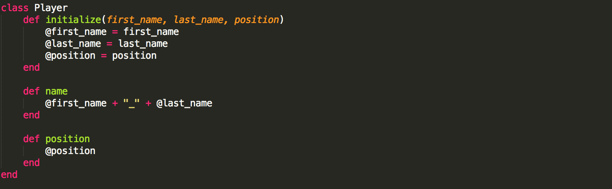
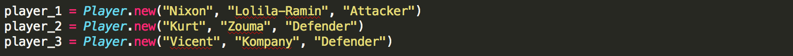
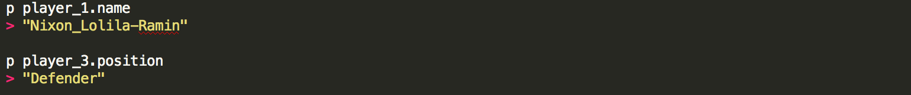
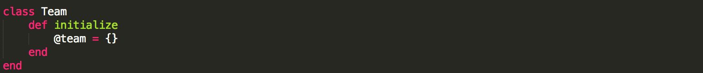
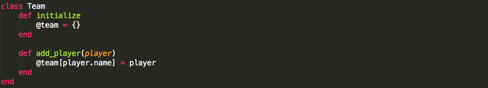
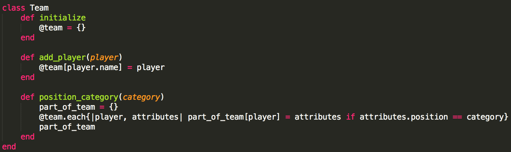
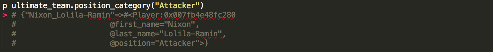
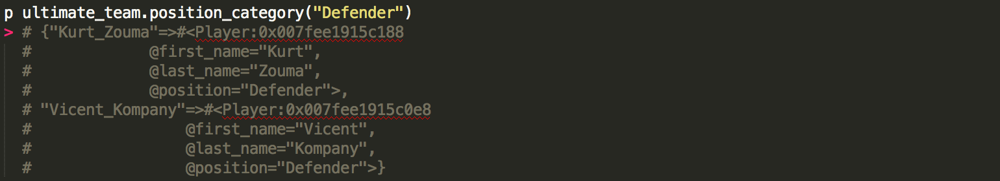

Classes
07/27/2014
So you've played countless games of Fifa 14 and have lost few, but crucial, tournament games because of some glitches that EA sports just hasn't addressed. So you are fed up and wish you could customize Fifa 14 to address those issues but just can't afford to wait on EA. So you get a couple of Fifa addicts together and get to talking about designing the best soccer game that'll ever be created. The first subject on your group's long to-do list is creating players and teams. You spend a night thinking about it and come up with a proposal. You propose creating a class called "Player" and within it a method that initializes all instances of class Player as follows:

You explain that the funky variables that start with "@" are called instance variables and what that means is that any method we create within class Player will be able to access the values that those instance variables point to.
You then explain that some instance methods (methods that every instance of class Player can call) will need to be created to access some information about the players you guys are going to create. So you propose adding the following instance methods:
You then proceed to show how a player(instance/object of class player) can be created(instantiated). You quickly create 3 players.
All looks good. But you want to make sure that your instance methods work so you call them on two of your created players.
Your fellow Fifa addicts are pleased with the model you are proposing and say they will think of other player attributes and methods to add to class Player. Great! Now on to creating and populating a team.
You go on to demonstrate a model for how teams could be created and populated. First you define class Team and initialize it with one instance variable that's an empty hash.
One of the guys asks why you aren't passing any inputs to your initialize method. You explain that for the game you will pass one input (team_name) to to it but for now you want to show everyone that you don't have to pass inputs when you initialize a class.
Then you add a method called "add_player" which, as most have guessed, adds a player to the team.
You explain that instance method add_player takes as its input an object (player) of class Player. It then takes that object's player name and sets it as a key in the team hash whose value will be the object. Your audience wants examples so you produce this:

You want your fellow addicts to understand the importance of using classes for your game so you go on to produce one more method called "position_category" which returns a hash consisting of players that play in the position category specified in the method's input.
You explain to your friends that if they wanted a list of attackers in the team they would simply call method position_category and pass "Attacker" as its input.
And if they wanted a list of defenders
With those two examples it becomes very clear that everyone understands how easy it would be to create a list of defenders from a league using classes. So you designate a few people to model how our player transfer market will work. And with that, the meeting is adjourned.